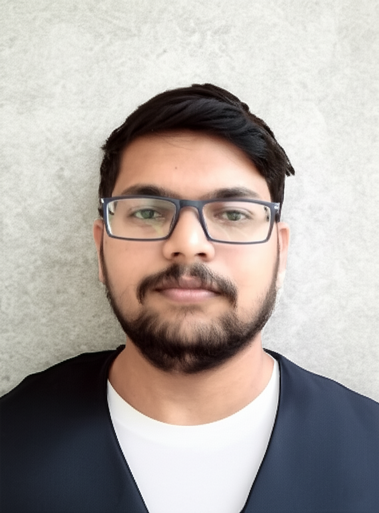

Motivated Cloud and DevOps Engineer (2024 Graduate) with hands-on experience provisioning AWS and Azure infrastructure, building CI/CD pipelines, and orchestrating containerized deployments. Building skills in AI-focused DevOps (MLOps) through LLM-based microservice projects. Skilled in designing secure VPCs, managing load balancing, and implementing Infrastructure as Code (IaC) to create scalable environments.
AWS (VPC, EC2, IAM, EBS, S3, RDS, ALB, NAT Gateway, CloudWatch, ECR, EKS), Azure (Virtual Machines, VNet Peering, AKS)
Docker, Kubernetes, Jenkins, Terraform, Ansible, Git
FastAPI, Google Gemini API (LLM), REST API Integration, Secret Management (.env)
Python, Shell Scripting, PowerShell, Linux, Windows, System Administration
B.Tech in Electronics and Communication Engineering | Minor: Data Science